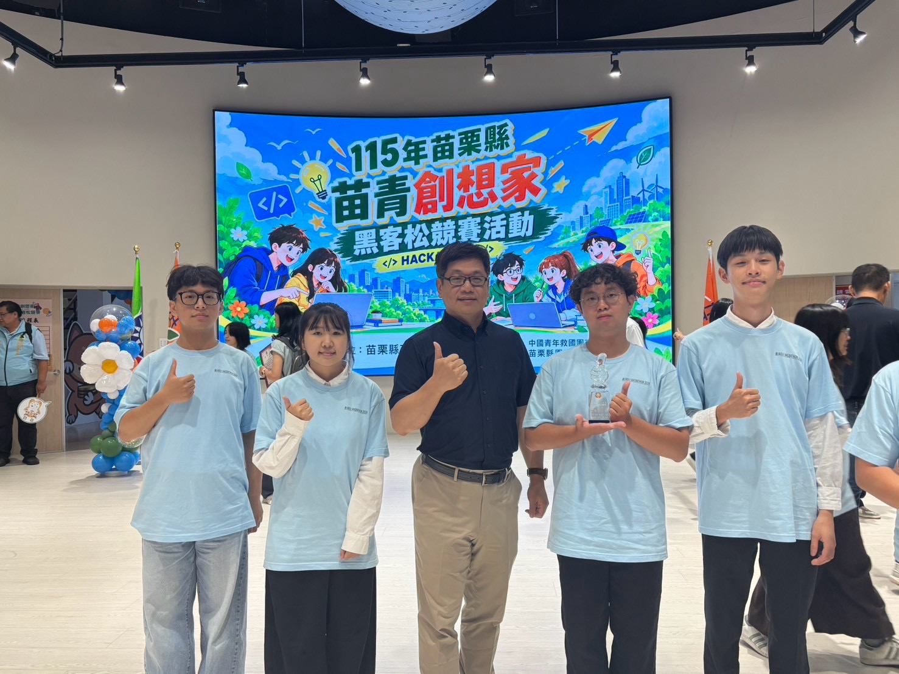
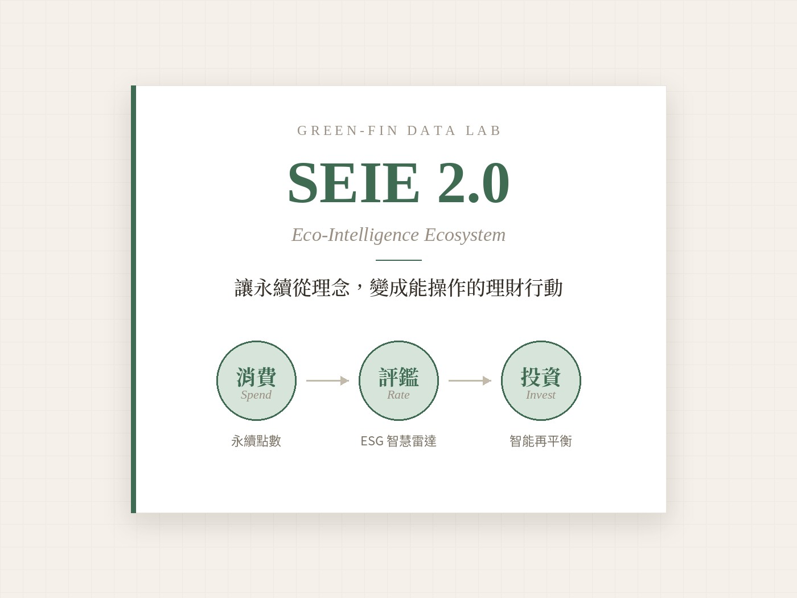

創新提案競賽

查看照片 4 張苗青創想家黑客松：客庄作田・智算未來
以「促進苗栗地方經濟」為題，針對苗栗特產作物價格波動、農民難以決定種植品項的痛點，提出結合價格預測與種植情境模擬的農民決策輔助系統。 農民輸入耕地面積、適種作物與種植條件後，系統即依不同風險偏好提供「穩健型」、「期望型」等種植策略建議，協助在地農業做出更有依據的決策。

第五屆永豐金控商業競賽：SEIE 2.0 永續金融生態圈
年輕投資人關心永續，卻缺少把理念化為行動的工具。本提案串接數位帳戶與證券 App 的數據，以「消費 ➔ 評鑑 ➔ 投資」三段式閉環，讓 ESG 成為可操作的理財行為。
‧ 消費端：升級個人碳帳戶，綠色消費可獲得永續點數，點數僅能折抵投資手續費，引導存款戶跨入投資。
‧ 決策端：於下單介面嵌入 ESG 智慧雷達，以 A+ 至 C 級評等、降評即時推播與 GenAI 白話摘要降低漂綠焦慮。
‧ 投資端：智能理財升級為「風險 × 報酬 × ESG」三維度再平衡，企業爆發治理事件時提出換股建議，由用戶一鍵確認。
健康科技盃：獨居長者毫米波雷達生理偵測提案
獨居長者在家跌倒或身體出狀況時，常常沒有人能及時發現。我們提出以毫米波雷達打造的居家安全偵測方案：
‧ 不需穿戴：長者不用配戴任何裝置，日常生活不受影響。
‧ 保護隱私：雷達只偵測動作與生命徵象，不拍攝任何影像。
‧ 即時警示：偵測到跌倒或生命徵象異常時，立即發出警示。